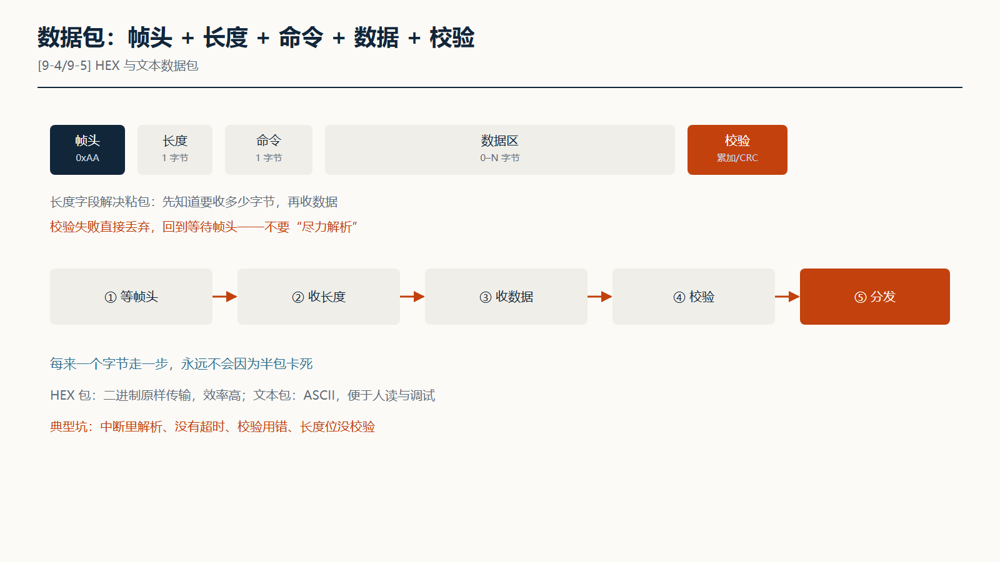

课程时长：约 90 分钟（三节） | 深度版 | 配套结构图与看图理解
9-4 做 HEX 数据包，9-5 做文本数据包，9-6 讲 FlyMcu 与 ST-LINK Utility 下载。
这一节把“发字符串”升级成“发协议”——有帧头、有长度、有校验，才能可靠地传结构化数据。
设计一个带校验的帧格式
用状态机解析且不被半包卡死
实现 HEX 包与文本包两种收发
用 FlyMcu 通过串口下载程序

图 18 数据包结构（帧头/长度/命令/数据/校验）与解析状态机
帧结构从左到右：帧头、长度、命令、数据、校验。长度字段告诉接收方“还要收多少字节”，这是解决粘包的关键。
下方是解析状态机：每来一个字节走一步，收满一帧再校验、分发。校验失败就丢弃，回到等帧头——不要“尽力解析”。
典型格式：0xAA 0x55 | 长度 | 命令 | 数据 | 校验。校验可用累加和或 CRC8。
长度建议只算“命令+数据”，收发双方约定一致即可，但必须写进文档。
| 字段 | 字节数 | 作用 |
|---|---|---|
| 帧头 | 1–2 | 定位一帧的开始 |
| 长度 | 1 | 告诉接收方还要收多少 |
| 命令 | 1 | 区分功能 |
| 数据 | 0–N | 负载 |
| 校验 | 1 | 累加和或 CRC8 |
文本包用 ASCII，形如 `LED_ON\r\n` 或 `SET,1,100\r\n`。优点是可以用串口助手直接敲、便于调试；缺点是体积大、解析要处理字符串。
解析时用 `strtok` 按逗号切分，或自己扫描；注意 `\r\n` 结束符。
/* 文本包：SET,1,100\r\n */
char cmd[16]; int id, val;
if (sscanf(buf, "SET,%d,%d", &id, &val) == 2) {
/* 处理 */
}
typedef enum { WAIT_HEAD, GET_LEN, GET_DATA, CHECK } st_t;
void parse_byte(uint8_t b)
{
static st_t st = WAIT_HEAD;
static uint8_t len, idx, sum;
switch (st) {
case WAIT_HEAD:
if (b == 0xAA) { st = GET_LEN; }
break;
case GET_LEN:
len = b; idx = 0; sum = b; st = GET_DATA;
break;
case GET_DATA:
buf[idx++] = b; sum += b;
if (idx >= len) st = CHECK;
break;
case CHECK:
if (b == sum) { dispatch(buf, len); }
st = WAIT_HEAD;
break;
}
}
粘包：一次收到两帧 → 状态机按长度切分，天然解决
半包：只收到前半帧 → 状态机停在中间，等后续字节
超时：等太久没后续 → 定时器清零状态机，避免永久卡住
FlyMcu 走串口 ISP：BOOT0 接 1、复位进 Bootloader，用 USART1 下载 hex，完成后 BOOT0 接回 0 再复位。
ST-LINK Utility 走 SWD：直接烧录与读保护设置，不需要改 BOOT0，日常更常用。
| 方式 | 接口 | 需要改 BOOT0 | 适用 |
|---|---|---|---|
| FlyMcu | USART1 | 是 | 无 ST-Link 时 |
| ST-LINK Utility | SWD | 否 | 日常开发 |
为什么必须有校验：串口没有纠错能力，一位出错就可能让“开灯”变成“关电机”。累加和能挡住绝大多数单字节错误，CRC8 更强。
为什么长度字段不能省：没有长度，接收方只能靠“帧尾”判断结束，而数据里可能刚好出现帧尾字节，必然误判。
例：一帧 8 字节（帧头 2 + 长度 1 + 命令 1 + 数据 3 + 校验 1），115200 下传输约 8×10/115200 ≈ 0.7ms。
每秒最多约 1400 帧——足够控制类应用；若数据量大，应考虑提高波特率或改用二进制压缩。
校验用累加和时，注意溢出按 8 位截断（uint8_t 自然回绕）。
| 错误写法 | 后果 | 正确做法 |
|---|---|---|
| 中断里直接解析 | 半包时阻塞，丢后续字节 | 中断入队，主循环解析 |
| 没有超时 | 半包后永久卡住 | 定时器复位状态机 |
| 校验失败仍解析 | 错误命令被执行 | 丢弃并回等帧头 |
| 长度含帧头 | 收发双方理解不一致 | 明确约定并写文档 |
状态机为什么比 if 嵌套可靠：状态机把“当前收到哪一步”显式保存，任何时刻来任何字节都有确定行为；if 嵌套依赖局部变量与顺序，半包时极易错乱。
文本包与 HEX 包的取舍：文本便于人读与调试，HEX 省带宽、解析快；产品里常见“调试用文本、量产用二进制”。
用串口助手连发两帧，确认能正确切分（粘包）
只发前半帧，停顿后再发后半帧，确认不丢（半包）
故意改错一个字节，确认校验失败被丢弃
| 现象 | 原因 | 解决 |
|---|---|---|
| 数据错位 | 长度字段算错 | 统一约定：长度只算命令+数据 |
| 偶发死机 | 半包无超时 | 加超时复位 |
| 命令不执行 | 校验算法两边不一致 | 用同一份代码算校验 |
| 下载失败 | BOOT0 没接 1 或串口被占用 | 检查跳线与串口助手 |
Q1. 为什么要帧头？
A：在一串字节里定位一帧的开始。
Q2. 长度字段解决什么问题？
A：粘包与半包。
Q3. 累加和怎么算？
A：所有字节相加，取低 8 位。
Q4. CRC8 比累加和强在哪？
A：能发现更多类型的错误。
Q5. 文本包的优点？
A：可读、可用串口助手直接调试。
Q6. FlyMcu 需要改什么？
A：BOOT0 接 1 进 Bootloader。
Q7. ST-LINK Utility 走什么接口？
A：SWD。
Q8. 解析放中断里行不行？
A：不行，半包会阻塞。
1. 一帧最少包含哪些字段？
答：帧头、长度、命令、校验。
2. 粘包怎么解决？
答：按长度切分。
3. 半包卡住怎么办？
答：加超时复位。
4. 下载后为什么要恢复 BOOT0？
答：否则不从 Flash 启动。
☐ 能设计帧格式
☐ 会写状态机
☐ 懂粘包半包
☐ 会两种下载方式